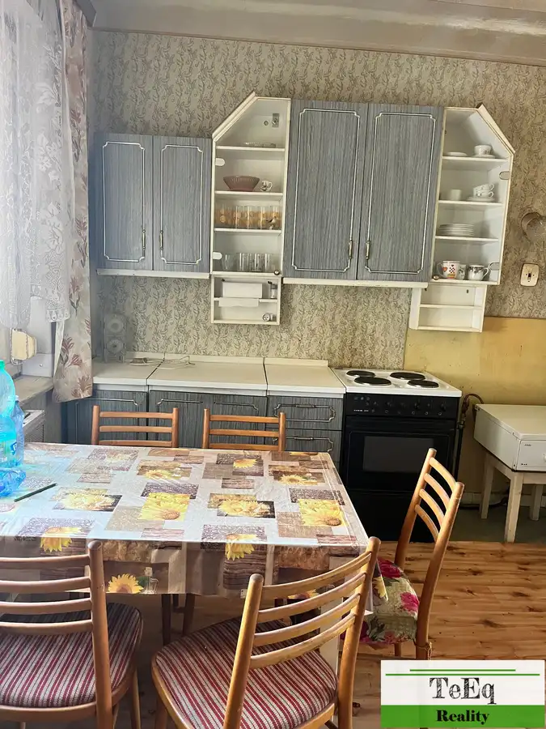
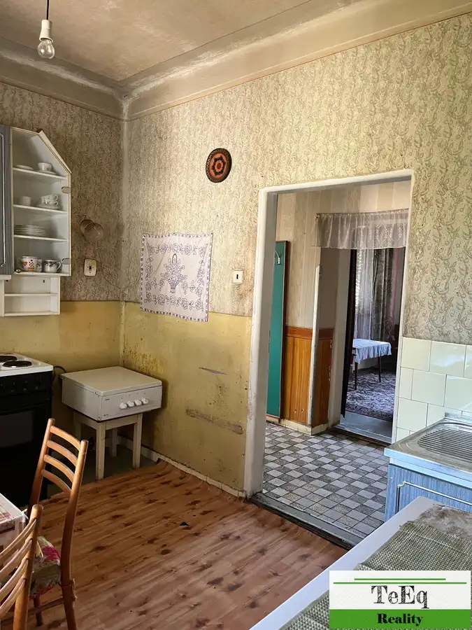
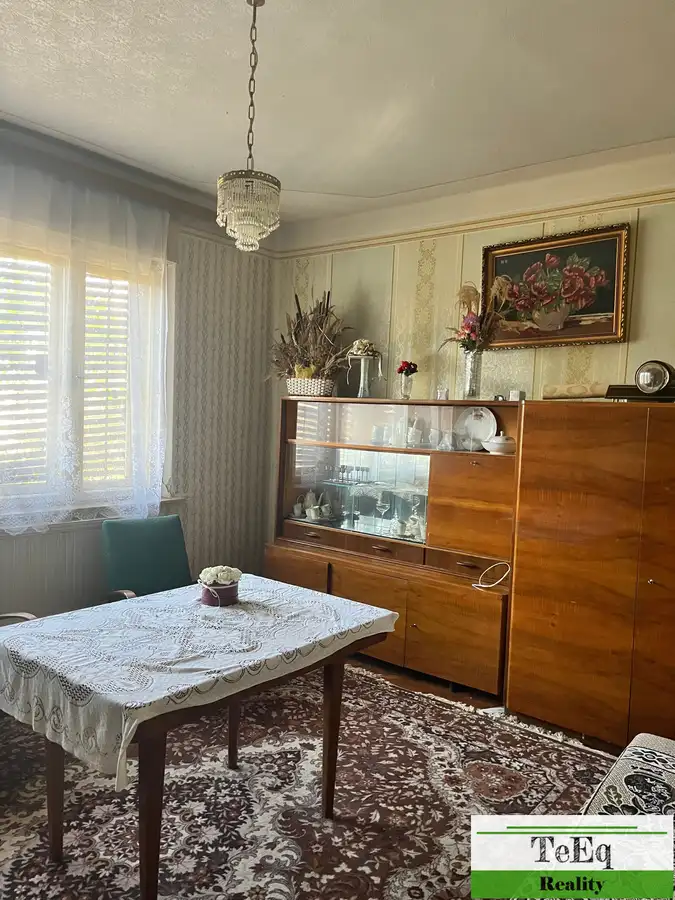
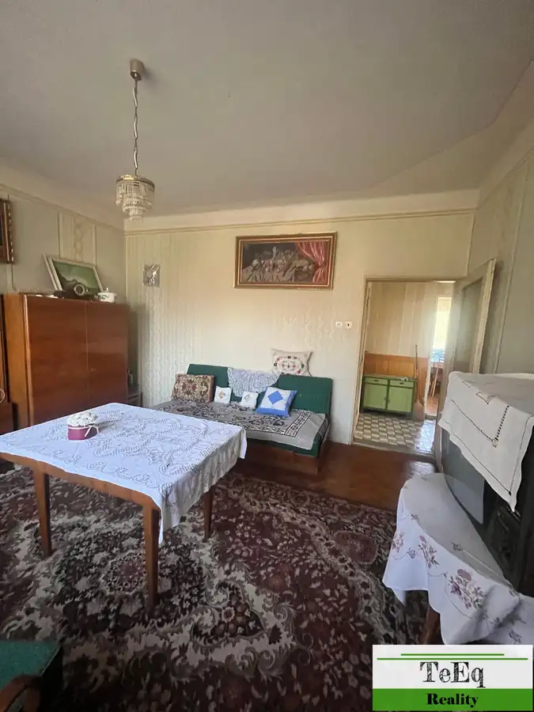
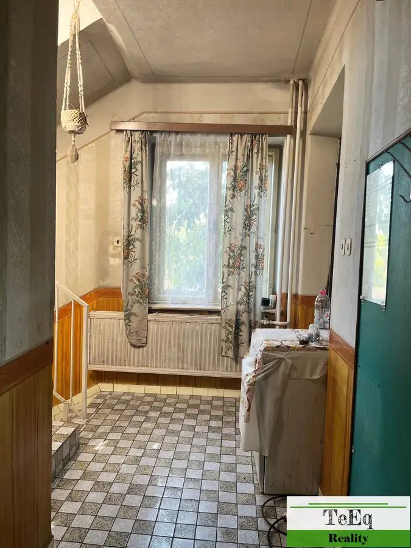
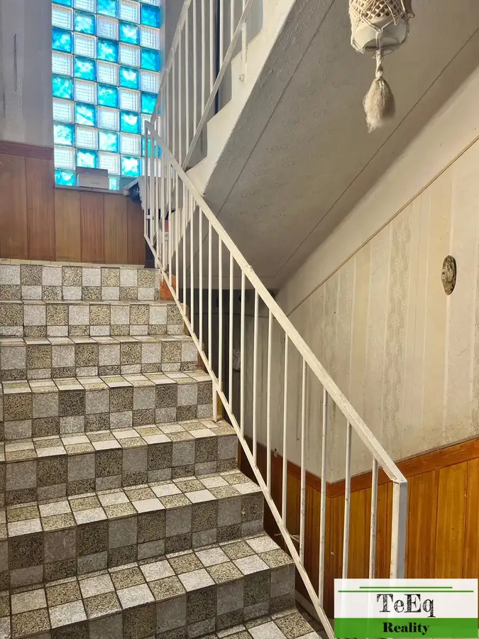

Predaj domu v obci Keť, okres Levice.
Keť






- Plocha270 m²
- StavPôvodný stav
O nehnuteľnosti
V TeEq Reality v zastúpení majiteľa predávame rodinný dom v obci Keť.Dvojpodlažný dom je postavený z tvárnic a tehly na oplotenom pozemku o celkovej rozlohe 544 m2.Dom je v pôvodnom stave, kolaudácia v roku 1974, drevené okná, podlahy izby drevené parkety, chodby a kúpeľňa dlažba a betón pokrytý PVC. Jedine strecha pre zatekanie opravovaná pred 3 rokmi. Dispozícia domu:1NP: chodba, 2 izby, kúpeľňa, kuchyňa, špajza, schodisko,2 NP: chodba, 3 izby a veľká terasa.Suterén: celý dom podpivničený, chodba a 4 miestnosti, v jednej je plynový kotol.V zadnej časti, domu je ešte priestranná miestnosť a garáž, nedokončené. Technické informácie :Elektrina : 220-380VVoda : vlastná studňa, pred domom možnosť napojenia na obecný vodovodPlyn : zapojený Kanalizácia : septikKúrenie : plynové ústredné Nehnuteľnosť vhodná pre väčšiu rodinu alebo aj prerobiť na dve - tri bytové jednotky.Výhody :-tiché pokojné prostredie-rekonštrukcia podľa svojich predstáv-možnosť rekreačného ako aj trvalého bývania- v obci základná občianska vybavenosť Z obci Keť máte 25km do Štúrova, 30km do Podhájskej, je to južná obec okresu Levice. Pre viac informácií ako aj obhliadku kontaktujte : Lýdia Oslancová RSc. 0907320577, mail: lydia.oslancova@teeq.sk
Parametre
- Druh
- Rodinný dom
- Druh domu
- Klasický dom
- Dátum zverejnenia
- 16. 09. 2026
- Energetický certifikát budovy
- nie je
- Plocha pozemku
- 544 m²
- Podpivničenie
- Úplné
- Počet izieb / miestností
- 5
- Počet kúpeľní
- 1
- Počet nadzemných podlaží
- 2
- Počet podzemných podlaží
- 1
- Rok kolaudácie
- 1974
- Rok poslednej rekonštrukcie
- 2023
- Rok výstavby
- 1974
- Stav nehnuteľnosti
- Pôvodný stav
- Terás
- 1
- Terén pozemku
- Rovinatý
- Typ
- Predaj
- Typ konštrukcie
- Tehlová, Zmiešaná, Pórobetón (Ytong)
- Vybavenie
- Terasa, Garáž, Pivnica, Špajza, Sklad
- Vykurovanie
- Ústredné
- Zastavaná plocha
- 160 m²
- Zdroj tepla
- Zemný plyn
- Úžitková plocha
- 270 m²